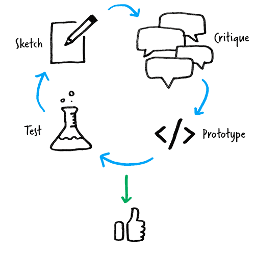

Contact
Everlane
Prototyping / Web / Mobile App
Spring 2015
Description
In February 2015, I was hired as a contractor to assist the Everlane design team with their web and mobile products. The team was working on improving the current web experience and introducing new features that will be commonly used in their new mobile app (released in late summer of 2015).
Working closely with the head of product and other designers, we developed lo-fi prototypes to rapidly prototype new functionality for consumer facing products such as the Everlane web store and ongoing developement of the mobile app. After discussion, testing, and refining, we iteratively designed prototypes into polished mock-ups for the engineering team. Using modern prototyping tools such as Sketch and Framer Studio we effectively communicated interactions to all stakeholders (designers, management, engineers, etc). Using agile development, our team consistently hit deadlines and benchmarks set by project managers throughout the process.
Process
After high-level discussions about project goals and constraints, I worked with the creative team to develope rough sketches and human-centered approaches for each design problem. After choosing a general direction, I created wireframes and rough prototypes for futher review. After my work was thoughtfully reviewed and critiqued, the rough prototypes started to resemble a more refined look with the help of interactive prototyping tools. Using web-based demos and software like Framer Studio, members of the creative team could test features on mobile and desktop browsers. When presenting interactive designs, I am always pleasantly surprised by the feedback from my team members. Many times, my colleagues were very enthuastic when they could see how a design comes to life. Equally, flaws and mishaps seem to present themselves all the more. After presenting the first round of interactive prototypes, the designs are modified and validated through one or more critiques while marching towards the tight deadlines in an agile environment. While working at Everlane, I quickly realized the importance of closing the gap begin static mock-ups and a shipped products while abiding to a human-centered approach through the entire process.
Results
By the time I wrapped up my contract at Everlane, I had helped deliver several products to the creative team. My work included a few features for the mobile shopping on the Everlane e-commerce site, and many advanced prototypes for the mobile app such as the onboarding experience and the "dress for today" section which suggests a selection of Everlance products that correlate to local weather conditions.
"Matt worked with us as a remote contractor on several projects at Everlane, taking our existing designs and bringing them to life with his excellent prototyping skills. He had a great attitude, was easy to communicate with, and always brought insightful input to the prototyping process. It was a pleasure working with Matt."
Cheryl Yau, Product Designer
"Matt is an eager worker and has a great eye for interactions. He is always ready for a challenge and takes tasks head on. The way he handles work is mature and inquisitive. I would be happy to work with Matt again."
Aaron Ginn, Product Manager
View Online Prototypes: